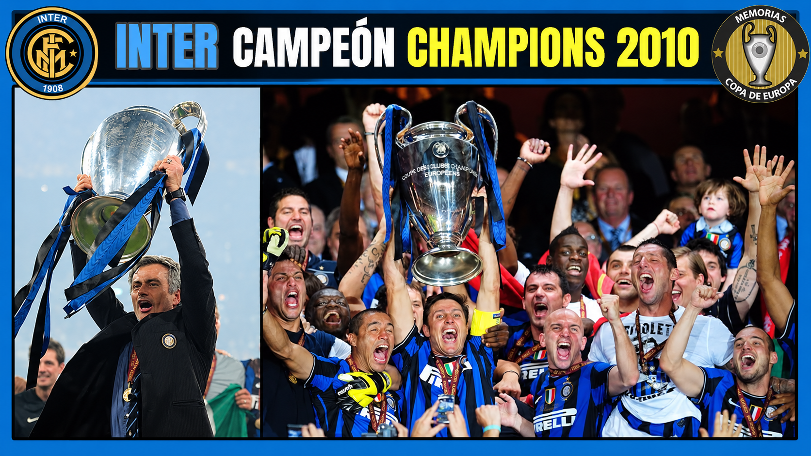

Una temporada para la historia

La historia del Inter de Milán de José Mourinho representa una de las temporadas más memorables del fútbol europeo. En la campaña 2009-10, el equipo italiano consiguió ganar la Serie A, la Copa Italia y la UEFA Champions League, convirtiéndose en el primer club italiano en conquistar los tres títulos principales en una misma temporada. Bajo la dirección de Mourinho, el Inter construyó un equipo competitivo, disciplinado y preparado para enfrentarse a los rivales más fuertes de Europa.
Aquella generación estuvo formada por grandes futbolistas como Javier Zanetti, Samuel Eto'o, Diego Milito, Wesley Sneijder, Esteban Cambiasso, Maicon, Lucio, Walter Samuel y Júlio César. Cada uno desempeñó una función importante dentro del equipo. Zanetti representaba el liderazgo y el compromiso; Sneijder aportaba creatividad y visión de juego; Eto'o ofrecía velocidad y experiencia; y Milito se convirtió en uno de los grandes protagonistas gracias a sus goles decisivos.
El camino hacia el triplete comenzó con la lucha por la Serie A. El Inter tuvo que competir durante toda la temporada para mantenerse por delante de sus rivales italianos. Con una defensa organizada, un mediocampo sólido y delanteros capaces de aprovechar las oportunidades, el equipo terminó conquistando el campeonato de liga. Además, ganó la Copa Italia tras vencer a la Roma por 1-0 en la final, disputada el 5 de mayo de 2010, con un gol de Diego Milito.

El mayor desafío llegó en la UEFA Champions League. Durante la competición, el Inter eliminó al Chelsea en octavos de final y al CSKA de Moscú en cuartos. En las semifinales se enfrentó al Barcelona, uno de los equipos más destacados de aquella época. Después de ganar 3-1 en Milán, el Inter perdió 1-0 en Barcelona, pero consiguió clasificarse para la final gracias al resultado global. La eliminatoria se convirtió en una muestra de la organización táctica y la fortaleza mental del conjunto italiano.
La final de la Champions League se disputó el 22 de mayo de 2010 en el estadio Santiago Bernabéu de Madrid. El Inter se enfrentó al Bayern de Múnich y logró una victoria por 2-0, con dos goles de Diego Milito. El delantero argentino fue decisivo, aprovechando las oportunidades con precisión y demostrando una gran capacidad para aparecer en los momentos importantes. Con aquella victoria, el Inter conquistó su tercera Copa de Europa y completó una temporada histórica.
Uno de los aspectos más destacados de aquel equipo fue la estrategia de José Mourinho. El entrenador portugués construyó un conjunto capaz de defender con orden, presionar cuando era necesario y atacar con rapidez. Su planteamiento no dependía únicamente de las individualidades, sino también de la coordinación entre los jugadores y de su compromiso con el objetivo colectivo. La experiencia de futbolistas como Zanetti, Cambiasso y Samuel fue fundamental para mantener el equilibrio del equipo.
El triplete también tuvo un significado especial para el fútbol italiano. El Inter demostró que era posible competir al máximo nivel europeo mediante una combinación de disciplina táctica, fortaleza defensiva y eficacia ofensiva. Después de conquistar la Champions League, Mourinho dejó el club y posteriormente se incorporó al Real Madrid, pero su etapa en Milán quedó grabada como una de las más exitosas de su carrera.
Lo que convirtió al Inter de Mourinho en una generación de culto no fueron solamente los tres títulos, sino la manera en que el equipo afrontó cada desafío. Diego Milito fue decisivo en las finales, Sneijder conectó el mediocampo con el ataque y Zanetti representó el liderazgo de un grupo unido. Todos contribuyeron a una conquista que combinó talento, sacrificio y una idea de juego muy definida.
El triplete del Inter dejó una enseñanza importante: la grandeza no depende únicamente de reunir estrellas, sino de conseguir que cada integrante trabaje por un propósito común. La temporada 2009-10 convirtió al Inter de Milán en una leyenda porque demostró que la disciplina, la confianza y el esfuerzo colectivo pueden llevar a un equipo hasta la cima del fútbol europeo.